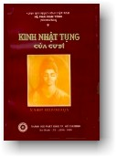

|
BuddhaSasana Home Page |
Vietnamese, with Unicode VU-Times font |
|  |
GIÁO
HỘI PHẬT GIÁO VIỆT NAM KINH NHẬT TỤNG CỦA CƯ SĨTỲ
KHEO TĂNG-ÐỊNH HỢP SOẠN
|
-ooOoo- Lời Tựa Thời gian gần đây, số kinh sách không đủ đáp ứng nhu cầu của Phật tử, nhất là giới Phật tử tại gia cần có một quyển kinh đọc tụng hằng ngày. Nhận thấy quyển "Nhựt Hành của người tại gia tu Phật" do Ngài Hòa Thượng HỘ TÔNG, soạn và quyển "Nhật Hành của cư sĩ" do Hòa Thượng PHÁP TRI tái bản tương đối đầy đủ để Phật tử tham gia trong các khóa lễ tụng đọc và thực hành hằng ngày. Ðáp lại lòng mong mỏi của chư Phật tử, chúng tôi mạn phép đúc kết lại thành một quyển "Kinh Nhật Tụng của cư sĩ". Kính dâng phần phước pháp thí đến Hòa Thượng Hộ Tông và các vị cao Tăng đã dầy công soạn dịch quyển kinh này. Ước mong Phật pháp được trường tồn, hưng thạnh đến năm ngàn năm. Ðại đức
TĂNG ÐỊNH -ooOoo- |
Chân thành cám ơn Đại đức Giác Đồng đã gửi tặng phiên bản vi tính (Bình Anson, tháng 08-2001)
[Trở
về trang Thư Mục]
last updated: 09-08-2004